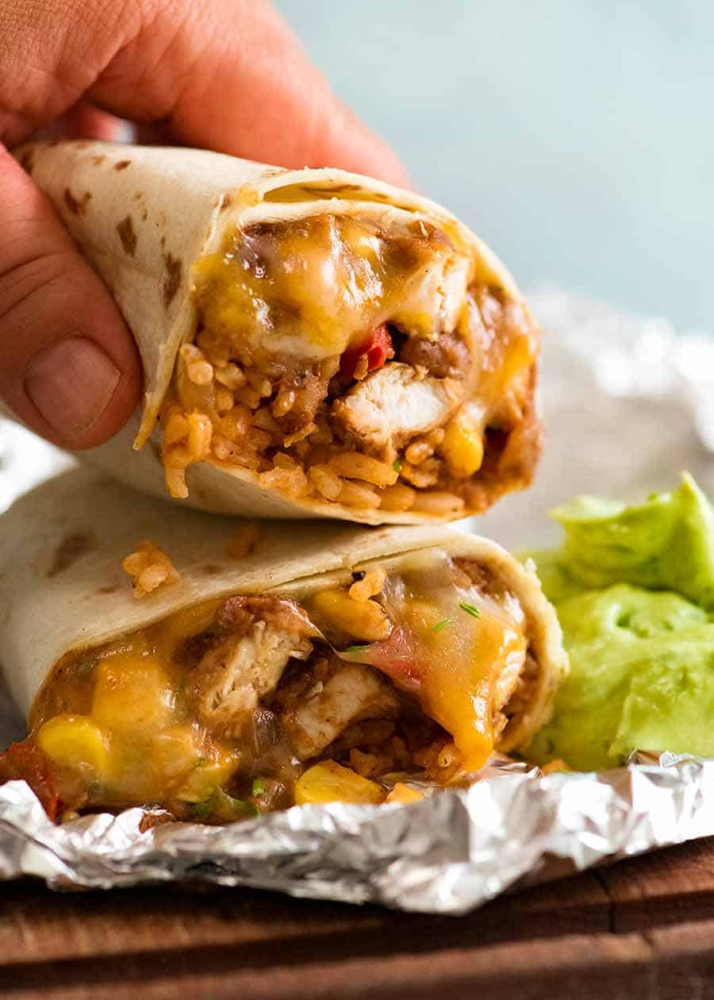

Meal Prep Frozen Burritos

Cheesy Chicken Burritos.
It is very easy to make these burritos if you have a few ingredients and a bit of time. They make an easy, delicious and healthy meal if you don't feel like cooking on a given night.
These will last in the freezer for about 3-4 months so you don't have to worry about them going bad.
Ingredients
- 6 Large Tortillas
- 700g of cooked chicken breast (roughly 3 breasts), cubed
- 8oz (226g) part skim shredded mozzarella cheese
- 4 wedges of laughing cow cream cheese (original)
- 1 lime or 1 tbsp of lime juice concentrate
- 1 can tri-blend beans or beans of choice
- 1 can tomato sauce
- 1 bell pepper
- 1 jalapeno
- Cilantro (optional)
Spices
- 1/2 tsp paprika, smoked preferrably
- 1 tbsp ancho chili powder
- 1/2 tbsp chili powder
- 1/2 tsp coriander
- 1/2 tbsp cumin
- 2 tsp onion powder
- 1 tsp garlic powder
- 1 1/2 tsp salt (to taste)
- 1 tsp black pepper
Steps
- Dice peppers
- Cook peppers and beans in a bit of water to soften
- Mix in tomato sauce and spices
- Add in prepped chicken and both cheeses
- Add lime juice if desired
- Cool mixture in fridge for 20 minutes, uncovered
- Evenly disperse mixture across 6 large tortillas and fold
- Store in freezer in parchment paper until ready to eat